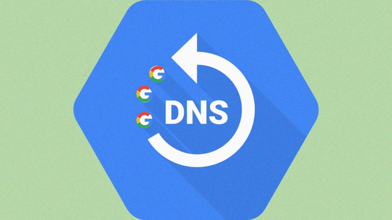

DNS
El sistema de nombres de dominio (DNS) es el directorio telefónico de Internet. Las personas acceden a la información en línea a través de nombres de dominio como nytimes.com o espn.com. Los navegadores web interactúan mediante direcciones de Protocolo de Internet (IP). El DNS traduce los nombres de dominio a direcciones IP para que los navegadores puedan cargar los recursos de Internet.
Cada dispositivo conectado a Internet tiene una dirección IP única que otros equipos pueden usar para encontrarlo. Los servidores DNS suprimen la necesidad de que los humanos memoricen direcciones IP tales como 192.168.1.1 (en IPv4) o nuevas direcciones IP alfanuméricas más complejas, tales como 2400:cb00:2048:1::c629:d7a2 (en IPv6).

¿Cómo funciona DNS?
El proceso de solución de DNS supone convertir un nombre de servidor (como www.ejemplo.com) en una dirección IP compatible con el ordenador (como 192.168.1.1). Se da una dirección IP a cada dispositivo en Internet, y esa dirección será necesaria para encontrar el dispositivo apropiado de Internet, al igual que se usa la dirección de una calle para encontrar una casa concreta. Cuando un usuario quiere cargar una página, se debe traducir lo que el usuario escribe en su navegador web (ejemplo.com) a una dirección que el ordenador pueda entender para poder localizar la página web de ejemplo.com.
Para entender el proceso de la resolución de DNS, es importante conocer los diferentes componentes de hardware por los que debe pasar una consulta de DNS. Para el navegador web, la búsqueda de DNS se produce "en segundo plano" y no requiere ninguna interacción del ordenador del usuario, aparte de la solicitud inicial.
Gracias al uso de servidores DNS podemos navegar de forma sencilla introduciendo el nombre de las páginas web en lugar de complicadas direcciones IP mucho más difíciles de recordar. Si el navegador web no puede establecer una conexión a internet significa que hay problemas DNS o que el servidor DNS no responde, y no se podrá tener acceso a la red para navegar por los distintos sitios web.
En este artículo hablaremos de cómo resolver un problema de DNS y conoceremos porque un servidor DNS no responde.
¿Presentas problemas con el DNS?
Cuando se produce un DNS server problem, o problema con las DNS, no se puede acceder a las páginas web, ya que al introducir el nombre del dominio el servidor DNS no es capaz de redireccionar al navegador a su dirección IP asociada.
Las principales causas por las que hacen que los navegadores no puedan acceder a sitios web y presenten un mensaje de error de DNS son:
¿Cómo resolver problemas de DNS?
Cuando se produce un problema DNS al utilizar Google u otro sitio web pueden realizarse una serie de comprobaciones para intentar solucionar el problema con las DNS.
Cambiar las DNS
Si hay problemas con el servidor DNS no se tendrá acceso a internet en el navegador. Para solucionarlo se pueden cambiar las DNS añadiendo una DNS principal y secundaria alternativa, como pueden ser las DNS públicas de Google:
Para cambiar las DNS hay que ir a Configuración/Redes e internet, seleccionar el tipo de conexión que se realiza (Wifi o Ethernet) y elegir Cambiar opciones de adaptador. En la nueva ventana, elegir con botón derecho sobre el adaptador que se usa para conectarse a internet la opción Propiedades, seleccionar el protocolo de internet versión 4 (TXC/IPv4) y hacer clic en propiedades. Desde la ventana que configuración emergente se podrán introducir las nuevas DNS a utilizar y así comprobar si se trata de un problema del servidor de DNS.
Utilizar otro navegador
Si no se encuentra el servidor DNS y no hay acceso a internet, el error puede estar producido por el navegador web que se está utilizando. Para comprobarlo basta con probar a acceder a la web utilizando otro navegador. Si se tiene acceso con el nuevo navegador entonces es necesario actualizar el navegador donde se produce el fallo a la última versión disponible o limpiar su caché, para así solventar este problema DNS y recuperar la navegación web.
Desactivar programas de protección
Los programas de protección como antivirus, antimalware y cortafuego pueden bloquear el acceso a la navegación web. Desactivarlos durante unos minutos para comprobar si se puede navegar es la mejor forma de comprobar si son los causantes del error de DNS.
Si al desactivar el software de protección se recupera la navegación web, hay que ir a sus opciones de configuración y buscar dónde están bloqueando el acceso a los navegadores y proceder a configurar el acceso correctamente.
Reiniciar el router
Los routers pueden bloquearse y no realizar su función de proporcionar acceso a internet a través de la fibra o línea de datos. Reiniciando el router se puede solucionar si el error de DNS es debido a este problema.
Escanear en busca de malware
Algunos programas maliciosos se instalan en el ordenador y, trabajando en segundo plano sin que el usuario sea consciente de ello, hacen que el funcionamiento del equipo sea defectuoso o inestable. Uno de los problemas que pueden ocasionar es el de impedir el acceso a la navegación.
Utilizando un programa antimalware se pueden detectar y eliminar este tipo de software y solucionar un error de “el servidor DNS no responde”.
Limpiar la caché del DNS y reiniciar la IP
Realizando una limpieza de la caché se puede eliminar el problema que impide la navegación. Con el comando ipconfig/flushdns desde la consola de Windows se puede limpiar la caché y comprobar si era la causante de este error de conexión.
Al reiniciar la IP también se puede solucionar un error de DNS. Para ello hay que ejecutar los siguientes comandos en la consola CMD: ipconfig /registerdns, ipconfig /release, ipconfig /renew.
Comprobar el protocolo IPv6
El protocolo IPv6 se utiliza para poder tener acceso a un mayor número de direcciones IP dado que el IPv4 se queda corto con la gran cantidad de sitios web y dispositivos que se conectan a internet. Si el protocolo está activado y se utiliza IPv4 para acceder a la red es posible que se presente algún error o conflicto que impida la navegación web. Desactivando el protocolo IPv4 se puede comprobar si es el causante de este problema.
Las DNS redirigen a hacia la IP de un sitio web cuando se introduce una dirección de dominio en un navegador web. Si se muestra un error de DNS quiere decir que el navegador no puede acceder a los sitios web porque el servidor DNS presenta un error y no puede redirigir hacia la dirección IP de ese sitio.